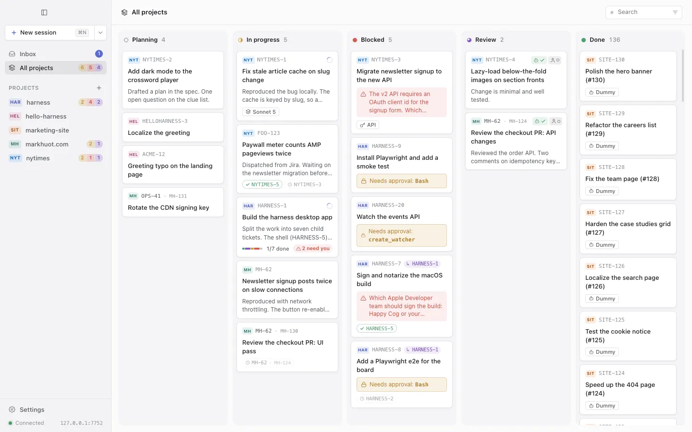

Every agent session is a ticket
Each job you hand an agent gets a card with a key like NYTIMES-4. The board shows what's in planning, what's running, what's waiting on you and what's ready for review, across every project on your Mac. Put projects in groups (Work and Personal, say) to give each group a board of its own.
